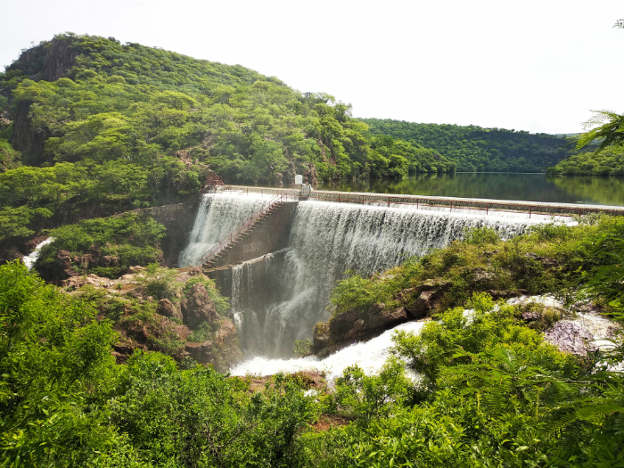
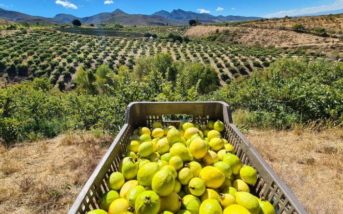

Every summer I go to visit my family in Mexico we visit our uncle's farm. On the way towards up the hills, we come across the quarry where the water is at its peak. Sorrounding areas are many seafood restaurants and places to rent around the quarry. Further up is my family's farm.
The farm consists of hundreds of Guava trees, farm animals, and a house to stay in for the night. The summer time is also when the guavas are ready to harvest and eat.
Aguascalientes, Mexico is the smallest and least populated state in Mexico. It is known for its agriculture and also home to the Guava capitol of the world, the economy is centered around the guava.